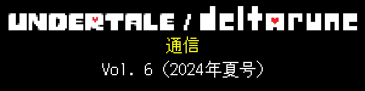
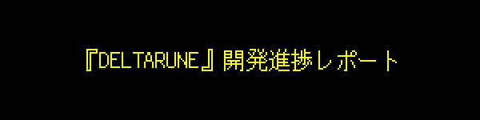
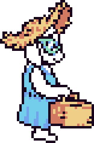
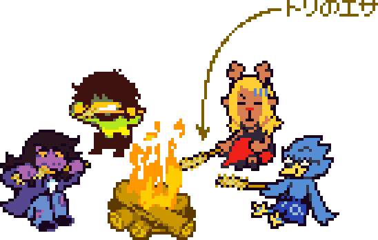
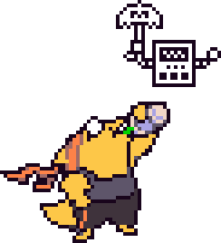
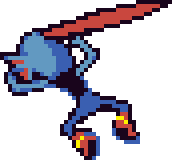
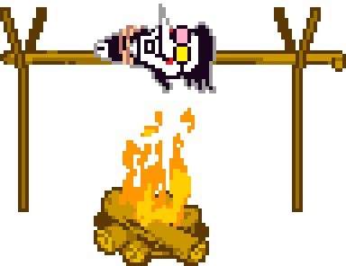

 |
 |
 |
みなさん、こんにちは！『DELTARUNE Chapter 4』の開発は、順調に進んでいますよ！ |
これを書いている時点（2024年7月23日）では、こんな感じです… |
|
先日、3人の友だちに未完成のChapter 4を遊んでもらって、最初から最後までプレイできることを確認できました。 |
全員、気に入ってくれて、大きな不満はないとのこと。ホッ…！ただし、そのうち1人は「全部のイスに名前をつけるべき。“チェアリエル”がいるなら、他のイスもみんな名前があると期待するのは当然」と、しつこく言いつづけてました。この要望は、たぶん無視すると思います… |
以前、Chapter 2がいちばん長いチャプターになると言ったと思います。現時点でもまだそうかは断言できないですが、Chapter 3と4を合わせると、確実にChapter 1と2を合わせたものより長くなってますね。いやー、マジかー… |
ちなみに、Chapter 5の開発にも順調に着手できていますよ！チームの大半はまだChapter 4に注力していますが、数人のメンバーはChapter 5のマップの草案を作りはじめたり、弾幕パターンの制作に取りかかったりしています。 |
|

 |
つまり、Chapter 4は、一部の仕上げをのぞいて、すでにプレイできる状態になっているということ！じゃあ、Chapter 3と4のリリースはもうすぐ…だと思うでしょう！？ |
… |
ところがどっこい、リリースはまだまだ先です！！前回のレポートから3か月分、リリースに近づきました。でも、それでもまだまだ先です！！ |
なんで！？ヒドい！ガッカリ！もどかしい！じれったい！これじゃ夜も眠れない！どういうこと！？今すぐリリースしたいのに！！ |
はい…そのワケをご説明しましょう。 |
 |
そう！Chapter 3と4を“作る”ことは、第一歩にすぎません！ |
できあがったチャプターを“リリースする”には、まだまだ長い道のりがあるのです… |
|
これが、無料リリースなら話は簡単です。でも今回は、『UNDERTALE』以降初めての有料リリース。万事抜かりがないように、念には念を入れて進めないといけません。 |
まず、僕たちが目指すのは…コンソール版とPC版、英語版と日本語版、すべてを同時にリリースすることです。 |
そのために何をしなければいけないかというと… |
…ちょっと長い話になるので、興味のある方だけ、下をクリックして読んでみてください。 |


 |
リリースを辛抱強く待ってくれているみなさん、本当に、本当に、ありがとうございます！開発チームは今、Chapter 3と4のリリースに向けて、最後のひと山を越えようとしているところです！ |
Chapter 5の進捗を見るかぎり、Chapter 3と4のリリース後は、続きのチャプターのリリーススケジュールはずっとスムーズに進んでいくと思います。もちろん、そこへたどり着くにはまだ長い道のりですが、たどり着いてしまえば、次のチャプターの完成までこれまでみたいに長く待つ必要はなくなるはずです！ |

… |
それと、もう1つ。『DELTARUNE』とは関係ないお知らせがあります！ |
はい、またホロライブです！ |
今回は、伝説の海賊、宝鐘マリンさんに、かめりあさんと僕で楽曲を提供しました！ |
激アツなMVもあるので、ぜひ観てください！ |
|
マリンさんからのリクエストは、彼女をテーマにした「ボス戦の曲」を作ってほしい、というものでした。おふざけ一切ナシの、シリアスで緊張感あふれる曲。参考に、と送られてきた曲は…「MEGALOVANIA」でした。 |
…そんなわけで、がんばってかっこいい曲を作りました！ |
マリンさんが考えたコンセプトは、亡霊バージョンの自分自身と戦う、というもの。かめりあさんと僕で曲を作っているうちに、最終的にはこのコンセプトをストーリーに起こす形になったんですが、それがMVの元ネタになりました。僕が出したアイデアを挙げると…「バトル中に、2人のマリンさんの顔が近づく瞬間を作ろう」ということと、亡霊版マリンさんのスペシャル攻撃と…どんでん返しです。 |

ではでは！そろそろ出航しまーす！ |
（次の進捗レポートは、9月に出せたらいいなと思います！） |
 |